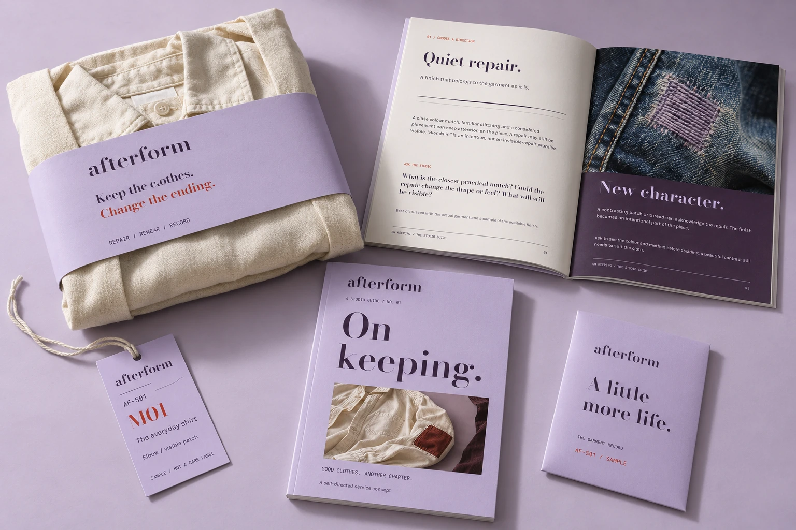
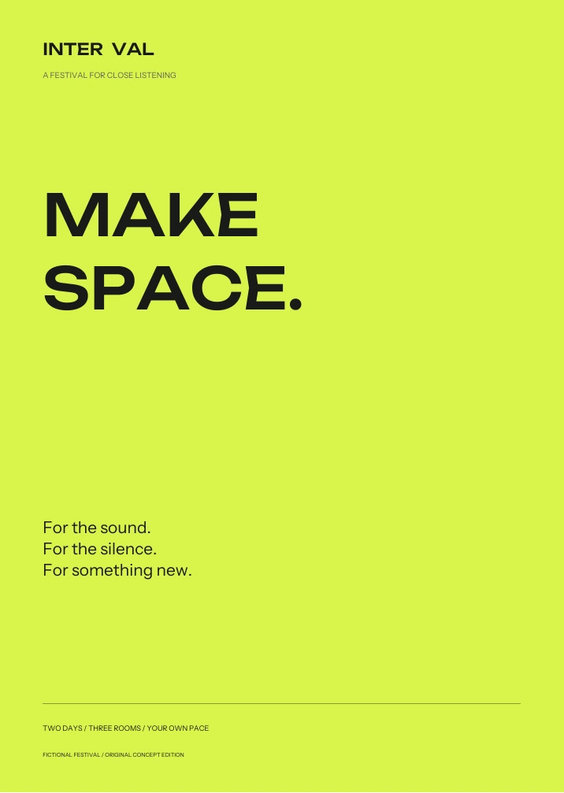

Campaign / editorial / email / production
PROOF
An editorially led design system extended into campaign studies, responsive email concepts, publication design and print handoff exploration.
Explore evidence & deliverables ↗JOCELYN MARTINEZ / GRAPHIC & VISUAL DESIGN
I build distinctive visual identities across art direction, digital marketing, editorial composition, print studies and responsive communication. Each concept is built for its particular message and medium.
THE SHORTLIST / ART DIRECTION
Four deliberately different creative systems, spanning publication, campaign art direction, photographic compositing, responsive emails, packaging and signage. Artwork is labeled as self-directed where appropriate.
Choose any project to inspect its decisions, artifacts and stated verification limits.
Campaign / editorial / email / production
An editorially led design system extended into campaign studies, responsive email concepts, publication design and print handoff exploration.
Explore evidence & deliverables ↗
Art direction / advertising / email
Photographic visual language, multiple social compositions, responsive email concepts and packaging/label studies.
Explore evidence & deliverables ↗
Identity / editorial / packaging
A conceptual repair-service identity spanning a publication, reusable artwork, packaging applications and a digital interface.
Explore evidence & deliverables ↗
Cultural graphics / print / digital
Festival identity adapted to promotional compositions, wayfinding, printed matter and an interactive schedule.
Explore evidence & deliverables ↗Distinctive typography, compositional systems, brand guidelines and reusable layouts.
Social assets, email studies, multi-format promotions, print and packaging design specifications.
Visual systems that adapt from interfaces to editorial publications, event graphics and physical artifacts.
Portfolio provenance: this selection combines academic/collaborative foundations and independent projects. Some work is AI-assisted and uses illustrative product imagery. Unconducted user research, fictional clients, paid campaign results, print vendor sign-off and unverified deployment outcomes are not claimed. See individual case studies for scope.